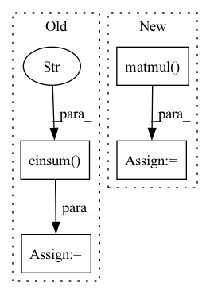

Pattern ID :12037
Before Change
KW = self.w_k(K)
KW = torch.einsum("nk,bnc->bkc", E, KW)
QW = self.w_q(Q)
QW = torch.einsum("bnc,bkc->bnk" , QW, KW)
P_bar = QW/torch.sqrt(torch.tensor(self.dim, dtype=torch.float32))
P_bar = P_bar.softmax(dim=-1)
P_bar = self.dropout(P_bar)
After Change
KW = torch.matmul(E, KW)
KW = torch.transpose(KW, 1, 2)
QW = self.w_q(Q)
QW = torch.matmul( QW, KW)
// TODO: Possibly change the dtype?
P_bar = QW/torch.sqrt(torch.tensor(self.dim, dtype=torch.float32))
P_bar = P_bar.softmax(dim=-1)In pattern: SUPERPATTERN
Frequency: 5
Non-data size: 4
Instances Fragment ID: 40705773
Project Name: tatp22/linformer-pytorch
Commit Name: 29cf2aba0b8c0d5509e11f3cf4de621630803857
Time: 2020-06-12
Author: peterta@ethz.ch
File Name: linformer_pytorch/linformer_pytorch.py
M Class Name: LinearAttentionHead
N Class Name: LinearAttentionHead
M Method Name: forward(6)
N Method Name: forward(6)
M Parent Class: nn.Module
N Parent Class: nn.Module
M File Name: linformer_pytorch/linformer_pytorch.py
N File Name: linformer_pytorch/linformer_pytorch.py
M Start Line: 43
M End Line: 52
N Start Line: 43
N End Line: 55
Before Change
The details of relative position is explained in: https://arxiv.org/pdf/1803.02155.pdf
B, Nh, H, W, _ = q.shape
rel_logits = paddlenlp.ops.einsum("b n h w d, m d -> b n h w m" , q, rel_k)
// Collapse height and heads
rel_logits = paddle.reshape(rel_logits, [-1, Nh * H, W, 2 * W - 1])
rel_logits = rel_to_abs(rel_logits)
rel_logits = paddle.reshape(rel_logits, [-1, Nh, H, W, W])After Change
def relative_logits_1d(q, rel_k):
B, Nh, H, W, _ = q.shape
rel_logits = paddle.matmul( q, rel_k.T)
// Collapse height and heads
rel_logits = paddle.reshape(rel_logits, [-1, Nh * H, W, 2 * W - 1])
rel_logits = rel_to_abs(rel_logits)
rel_logits = paddle.reshape(rel_logits, [-1, Nh, H, W, W]) Fragment ID: 40705756
Project Name: br-idl/paddlevit
Commit Name: 8d48d071238f6c8f7a8d6832d9b3f8f901311d5f
Time: 2021-12-14
Author: dhwlh123@163.com
File Name: image_classification/BoTNet/botnet.py
M Class Name: AnonimousClass
N Class Name: AnonimousClass
M Method Name: relative_logits_1d(2)
N Method Name: relative_logits_1d(2)
M Parent Class:
N Parent Class:
M File Name: image_classification/BoTNet/botnet.py
N File Name: image_classification/BoTNet/botnet.py
M Start Line: 57
M End Line: 57
N Start Line: 27
N End Line: 27
Before Change
// Last iteration with original u_hat to pass gradient
c = b.softmax(dim=1)
s = torch.einsum("ijk, ijkl -> ijl" , c, u_hat_temp)
v = squash(s)
return v
After Change
// W @ x =
// (1, num_caps, in_caps, dim_caps, in_dim) @ (batch_size, 1, in_caps, in_dim, 1) =
// (batch_size, num_caps, in_caps, dim_caps, 1)
u_hat = torch.matmul( self.W, x)
// (batch_size, num_caps, in_caps, dim_caps)
u_hat = u_hat.squeeze(-1)
// detach u_hat during routing iterations to prevent gradients from flowing
temp_u_hat = u_hat.detach()
Fragment ID: 40705769
Project Name: riroaki/capsnet
Commit Name: e62f83faad1731befd8a1e434aaf902e2140aecb
Time: 2020-03-08
Author: aki@akideMacBook-Pro.local
File Name: capsnet.py
M Class Name: DigitCaps
N Class Name: DigitCaps
M Method Name: forward(2)
N Method Name: forward(2)
M Parent Class: nn.Module
N Parent Class: nn.Module
M File Name: capsnet.py
N File Name: capsnet.py
M Start Line: 50
M End Line: 79
N Start Line: 59
N End Line: 93
Before Change
xy, z = torch.split(points, [2, 1], dim=-1)
c, s = torch.cos(theta), torch.sin(theta)
R = torch.stack((c, -s, s, c), dim=-1).view(1, -1, 2, 2)
xy = torch.einsum("ijkl,imjl->imjk" , R, xy)
xyz = torch.cat((xy, z), dim=-1)
return xyz
def sample_gridpoints(self, proposals):After Change
xy, z = torch.split(points, [2, 1], dim=-1)
c, s = torch.cos(theta), torch.sin(theta)
R = torch.stack((c, -s, s, c), dim=-1).view(b, n, m, 2, 2)
xy = torch.matmul( R, xy.unsqueeze(-1))
xyz = torch.cat((xy.squeeze(-1), z), dim=-1)
return xyz
def sample_gridpoints(self, proposals): Fragment ID: 40705798
Project Name: jhultman/vision3d
Commit Name: 1a652d6cae90ba6dca963f3725b0cb1b9049e39c
Time: 2020-02-12
Author: 27909223+jhultman@users.noreply.github.com
File Name: pvrcnn/roi_grid_pool.py
M Class Name: RoiGridPool
N Class Name: RoiGridPool
M Method Name: rotate_z(3)
N Method Name: rotate_z(3)
M Parent Class: nn.Module
N Parent Class: nn.Module
M File Name: pvrcnn/roi_grid_pool.py
N File Name: pvrcnn/roi_grid_pool.py
M Start Line: 41
M End Line: 43
N Start Line: 39
N End Line: 45
Before Change
def absolute_logits(self, inputs):
pos_emb = tf.expand_dims(self.pos_emb_h, 2) + tf.expand_dims(self.pos_emb_w, 1)
abs_logits = tf.einsum("bxyhd,dpq->bhxypq" , inputs, pos_emb)
return abs_logits
def call(self, inputs):
pos_emb = self.absolute_logits(inputs) if self.use_absolute_pos else self.relative_logits(inputs)After Change
def absolute_logits(self, inputs):
// pos_emb = tf.expand_dims(self.pos_emb_w, -2) + tf.expand_dims(self.pos_emb_h, -1)
// return tf.einsum("bxyhd,dpq->bhxypq", inputs, pos_emb)
rel_logits_w = tf.matmul( inputs, self.pos_emb_w)
rel_logits_h = tf.matmul(inputs, self.pos_emb_h)
return tf.expand_dims(rel_logits_w, axis=-2) + tf.expand_dims(rel_logits_h, axis=-1)
def call(self, inputs): Fragment ID: 40705750
Project Name: leondgarse/keras_cv_attention_models
Commit Name: 65211d256d2398b82f3327cfea4778a23ac8cf1b
Time: 2021-12-22
Author: leondgarse@gmail.com
File Name: keras_cv_attention_models/botnet/botnet.py
M Class Name: RelativePositionalEmbedding
N Class Name: RelativePositionalEmbedding
M Method Name: absolute_logits(2)
N Method Name: absolute_logits(2)
M Parent Class: keras.layers.Layer
N Parent Class: keras.layers.Layer
M File Name: keras_cv_attention_models/botnet/botnet.py
N File Name: keras_cv_attention_models/botnet/botnet.py
M Start Line: 95
M End Line: 97
N Start Line: 99
N End Line: 101